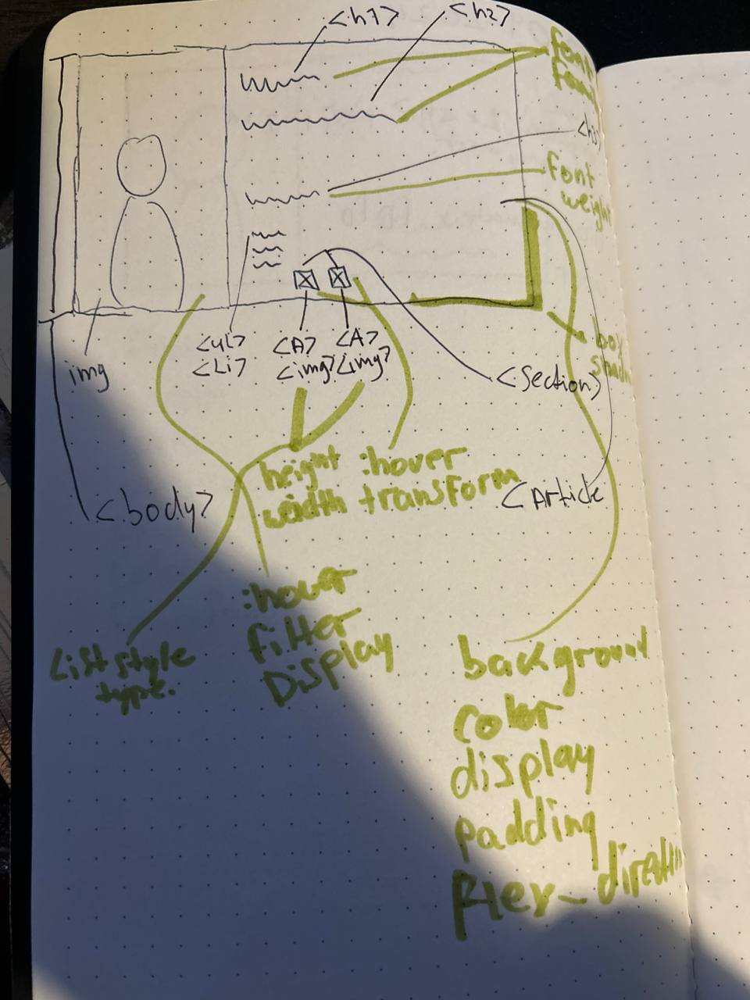
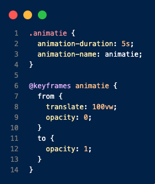

Vandaag heb k geleerd over de html basics. Wat de html structuur is en semantic. Ook heb ik een github account
gemaakt en een repository geforked. en ben ik begonnen met het schrijven van html code voor de
visitiekaartje. aan de hand van de schetsen die ik heb gemaakt.
3 September 2024
Wat heb ik vandaag gedaan?
Vandaag heb ik een presentatie bijgewoont over het web en de verschillende technologien : css, html en
javascript.
vervolgens heb ik de workshop css deel 1 gevolgt. dit ging over de css basics, waaronder de selectors en
properties.
Ook heb ik geleerd over de Devtools. waarvoor je dit kan gebruiken en hoe handig dit is.
Na verloop van de workshop ben ik verder bezig geweest met mijn visitekaartje, ik ben begonnen met een
tweede
schets, omdat ik de eerste niet zo mooi vondt.
Ik heb dus een nieuwe schets gemaakt en vervolgens heb ik een breakdown-schets gemaakt. Na het schetsen
ben ik
weer begonnen met het coderen.
van html en het toepassen van de nieuwe kennis van css.

4 September 2024
Wat heb ik vandaag gedaan?
Vandaag heb ik geleerd over het maken van een Breakdown schets. Dit heb ik toegepast aan mijn schets.
verder heb ik verder gewerkt aan mijn visitekaartje. De styling heb ik aangepast en ik heb basic
animaties
toegevoegd.
1.Wat is het nut van een breakdown schets
Dit maakt duidelijk welke elementen en properties van css, html en javascript je kunt gaan gebruiken om
de
objecten van je schets werkelijk te maken
2.Waarop moet je letten als je een breakdown schets maakt
Een duidelijke onderscheidt maken tussen de elementen en properties van de verschillende talen. dit kan
met
verschillende kleuren.

5 September 2024
Wat heb ik vandaag gedaan?
Vandaag heb ik de javascript workshop basics gevolgt. Hier hebben we gewerkt in de devtools.
4 September 2024
Wat heb ik vandaag gedaan?
Vandaag heb ik me verdiept in het maken van een breakdown-schets. Dit proces hielp me om de
verschillende elementen van mijn ontwerp te visualiseren en hun functies te begrijpen. Het was
fascinerend om te zien hoe elk onderdeel samenkomt in een groter geheel. Daarnaast ben ik begonnen met
het ontwerpen van mijn visitekaartje. Ik heb niet alleen de kleuren aangepast, maar ook geëxperimenteerd
met verschillende stijlen en animaties. Het toepassen van basisanimaties gaf mijn ontwerp een
dynamischer gevoel, wat ik erg leuk vond.
5 September 2024
Wat heb ik vandaag gedaan?
Vandaag heb ik me gefocust op het gebruik van JavaScript, met name de click event. Ik ben begonnen met
het implementeren van interactieve animaties op mijn visitekaartje. Dit was een interessante uitdaging,
omdat het me in staat stelde om te begrijpen hoe JavaScript de gebruikerservaring kan verrijken. Het
gevoel dat je ontwerp daadwerkelijk reageert op gebruikersinteracties, geeft een enorme boost aan mijn
motivatie en creativiteit.
9 September 2024
Wat heb ik vandaag gedaan?
Vandaag ben ik begonnen met de groepsopdracht. We hebben elkaar leren kennen en hebben samen
gebrainstormd over het design van onze webpagina. Iedereen maakte zijn eigen schets, waarna we een opzet
voor een breakdown-schets maakten. Het verdelen van taken zorgde ervoor dat we onze efficiëntie konden
maximaliseren. Het was inspirerend om te zien hoe de verschillende ideeën en visies van teamleden
samensmelten tot één project.
10 September 2024
Wat heb ik vandaag gedaan?
Vandaag heb ik me verdiept in het gebruik van grid-layout in CSS. Ik heb geleerd hoe je de parent en
child elementen kunt definiëren, en welke CSS-regels daarbij essentieel zijn. Dit begrip heeft mijn
vaardigheden in webdesign aanzienlijk verbeterd, omdat ik nu beter begrijp hoe ik elementen op een
webpagina kan structureren. Het was een waardevolle les die me zal helpen bij toekomstige projecten.
display: grid;
gap: 1em;
grid-template-columns: 1fr 4fr 2fr;
grid-column-start: 2;
grid-column-end: 4;
grid-column: 1 / -1;
article:nth-of-type(3n);
16 September 2024
Wat heb ik vandaag gedaan?
Vandaag heb ik deelgenomen aan een design workshop, waar we met Figma hebben gewerkt. Dit programma
stelde me in staat om mijn ideeën visueel te vertalen en te prototype. Het proces van prototyping gaf me
een beter begrip van gebruikerservaring en hoe ontwerpen moeten voldoen aan de behoeften van de
gebruiker. Het was inspirerend om te zien hoe de ideeën van anderen in een prototype tot leven kwamen.
17 September 2024
Wat heb ik vandaag gedaan?
Vandaag hebben we een workshop gehad over CSS-transities en transforms. We hebben verschillende
technieken besproken om animaties toe te voegen aan onze ontwerpen, wat de gebruikerservaring kan
verrijken. Ik heb geoefend met het implementeren van deze technieken in mijn project, en het was
opwindend om te zien hoe kleine veranderingen een grote impact kunnen hebben op de uitstraling van een
webpagina.
18 September 2024
Wat heb ik vandaag gedaan?
Vandaag heb ik gewerkt met het projectteam. We hebben de final webpagina van de squad samengevoegd.
Vervolgens hebben we alles getest en zijn we langs de issues gegaan om te controleren of alles klopt.
Ook zijn we begonnen met het maken van de README, wat een belangrijke stap is om onze samenwerking te
documenteren. Dit heeft me geleerd hoe belangrijk het is om alles goed te documenteren, zowel voor
onszelf als voor eventuele toekomstige ontwikkelaars. Het samenvoegen van onze ideeën tot een
samenhangend geheel was een waardevolle ervaring.
23 September 2024
Wat heb ik vandaag gedaan?
Vandaag heb ik een opdrachtgever gekozen waarvoor ik een website wil maken. Hierna hebben we een
vergadering gehad over wat er allemaal verwacht wordt van het product. Dit was een waardevolle ervaring
om de wensen van de opdrachtgever te begrijpen. Het was interessant om te horen hoe zij hun doelgroep en
de bijbehorende functionaliteiten voor ogen hebben. Toen ben ik begonnen met het maken van de briefing,
wat me heeft geholpen om mijn gedachten te structureren en een helder plan van aanpak te creëren. Dit
proces heeft me ook doen beseffen hoe belangrijk het is om een duidelijke communicatielijn te hebben met
de opdrachtgever.
25 September 2024
Wat heb ik vandaag gedaan?
Ik heb geoefend met schetsen en hoe je een lofi en hifi schets maakt. Dit proces heeft me geholpen om
beter te begrijpen hoe ik ideeën visueel kan overbrengen. Ook heb ik al een begin gemaakt aan de
playlist HTML-pagina. Het was een goed moment om te experimenteren met verschillende lay-out ideeën. Het
uitwerken van deze ideeën op papier gaf me ook de kans om te reflecteren op wat ik heb geleerd en hoe ik
dat kan toepassen in mijn ontwerpen. Dit hielp me om een beter idee te krijgen van hoe de uiteindelijke
pagina eruit zal zien.
27 September 2024
Wat heb ik vandaag gedaan?
Ik heb vandaag feedback gegeven aan een aantal mensen op het gebied van HTML, ook heb ik zelf feedback
ontvangen. Dit was een waardevolle ervaring omdat het me heeft geholpen om mijn eigen kennis te
verdiepen en mijn communicatievaardigheden te verbeteren. Het was een goede gelegenheid om te
reflecteren op mijn werk en te leren van anderen. Het proces van feedback geven en ontvangen heeft me
doen inzien hoe belangrijk het is om open te staan voor kritiek en om hiervan te leren.
30 September 2024
Wat heb ik vandaag gedaan?
Vandaag heb ik geleerd over de verschillende layout modes in CSS en heb ik geoefend met de verschillende
opdrachten. Ik ben nu bij opdracht 5. Deze kennis zal ik zeker toepassen in mijn projecten om meer
flexibele en responsieve ontwerpen te maken. Het begrijpen van grid en flexbox zal mijn ontwerpen een
nieuwe dimensie geven, waardoor ik in staat ben om effectievere en gebruiksvriendelijkere websites te
bouwen.
1 Oktober 2024
Wat heb ik vandaag gedaan?
Vandaag heb ik mijn eerste stappen gezet in het leren van Flexbox. Ik heb me verdiept in de
basisprincipes en de verschillende eigenschappen die Flexbox biedt, zoals `flex-direction`,
`justify-content`, en `align-items`. Het was een uitdagende maar zeer leerzame ervaring. Door met
voorbeelden te werken, kon ik visueel zien hoe deze eigenschappen de layout van een webpagina kunnen
beïnvloeden.
3 Oktober 2024
Wat heb ik vandaag gedaan?
Vandaag heb ik verder gewerkt met mijn project en ben ik begonnen met het implementeren van de nieuwe
Flexbox-structuur in mijn webpagina. Dit stelde me in staat om elementen op een meer georganiseerde
manier weer te geven. Ik vond het bijzonder waardevol om te zien hoe deze nieuwe kennis de
gebruikerservaring verbeterde. Ook heb ik feedback gevraagd van medestudenten over mijn design.
7 Oktober 2024
Wat heb ik vandaag gedaan?
Vandaag heb ik gewerkt aan het optimaliseren van de mobiele versie van mijn website. Ik heb media
queries toegevoegd om ervoor te zorgen dat de layout zich aanpast aan verschillende schermformaten. Dit
was een leerzame ervaring, omdat ik me nu veel meer bewust ben van het belang van
gebruiksvriendelijkheid op verschillende apparaten. Het resultaat was een veel responsiever ontwerp dat
de navigatie vergemakkelijkt.
9 Oktober 2024
Wat heb ik vandaag gedaan?
Vandaag heb ik verder gewerkt aan het integreren van JavaScript in mijn project. Ik heb geleerd hoe ik
eenvoudige interacties kan toevoegen, zoals het tonen en verbergen van elementen. Dit voegde een nieuwe
laag van dynamiek toe aan mijn website. Het was spannend om te zien hoe zelfs kleine aanpassingen een
groot verschil kunnen maken in de gebruikerservaring.
11 Oktober 2024
Wat heb ik vandaag gedaan?
Vandaag heb ik deelgenomen aan een peer-review sessie met mijn klasgenoten. We hebben elkaars projecten
bekeken en constructieve feedback gegeven. Dit was niet alleen nuttig om mijn eigen werk te verbeteren,
maar ook om nieuwe perspectieven en ideeën te krijgen van anderen. Het was inspirerend om te zien hoe
verschillende stijlen en technieken kunnen leiden tot unieke resultaten.
15 Oktober 2024
Wat heb ik vandaag gedaan?
Vandaag heb ik me gericht op het testen van mijn website op verschillende browsers en apparaten. Dit was
een belangrijk onderdeel van het ontwikkelingsproces, omdat het ervoor zorgde dat mijn site toegankelijk
en gebruiksvriendelijk blijft, ongeacht waar deze wordt bekeken. Door verschillende situaties te
simuleren, kon ik bugs en incompatibiliteitsproblemen oplossen.